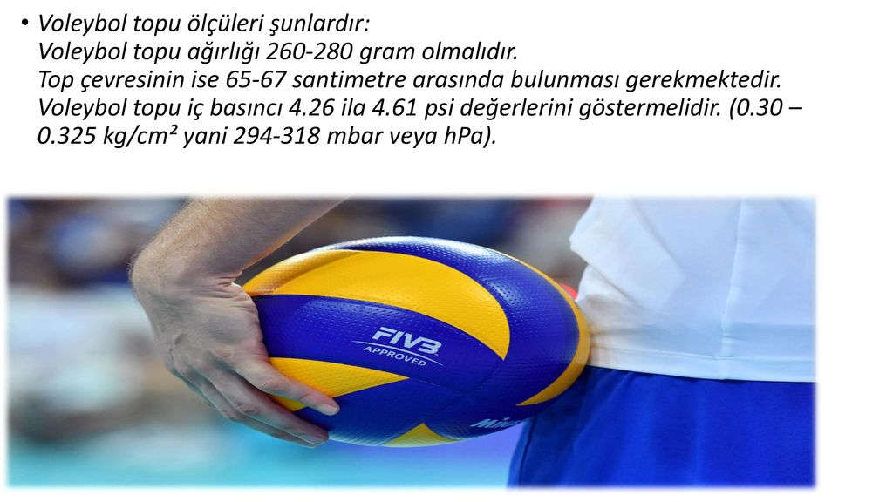

Voleybol topu nasıl olmalı?
Çevresi 65-67 cm, ağırlığı 260-280 gram ve iç basıncı 0,300/0,325 kg/cm2olmalı. Mini voleybol topları: 9-13 yaş aralığındaki çocukların oynayabileceği top türü olan mini voleybol toplarının çevresi 65-67 cm olarak belirleniyor ve ağırlığı da 200-220 gram arasında.